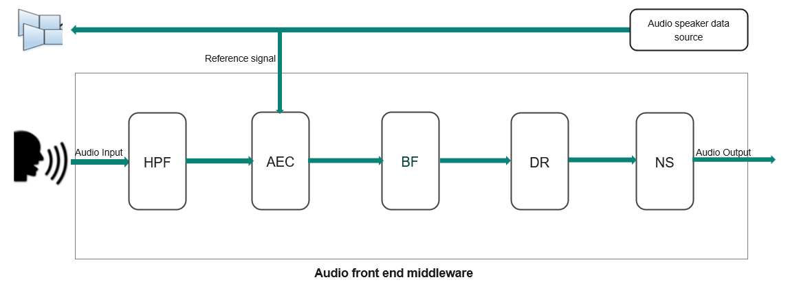

AFE is an agnostic audio processing technology that allows a more accurate recognition of voice commands (far-field or close field) by removing the inference sound captured from the microphone. It extracts user's voice and cancels out an unintended sound to provide the clear speech recognition and better wake word detection.

As shown in the above block diagram, Audio front end middleware comprises of various algorithms supported internally as below.
- Beamforming (BF) : Uses two or more microphones to form a spatial filter that can extract a signal from a specific direction and reduce the contamination of signals from other directions.
- Noise suppression (NS) : Reduces the stationary background noise.
- Acoustic Echo Cancellation (AEC) : Cancels the acoustic feedback between a speaker and a microphone. Audio data which is being played to speaker is fed back as reference data to AEC algorithm to remove out the acoustic effect of an audio.
- Dereverberation (DR) : Removes the reverberation effect from sound.
Audio front-end middleware provides easy-to-use APIs to feed the audio data that are filtered internally by cleaning up the audio and then clean audio signals are given back to user application. Audio front-end configurator GUI tool is provided along with the ModusToolbox™ IDE using which various components can be configured by the user and it generates (*.c/.h*) file which can be compiled along with the audio front-end middleware to configure various algorithms.
Features
- AFE middleware supports NS, AEC, BF, and DR audio algorithms.
- AFE middleware supports option for application to provide its own buffer to fill AFE output data so application can manage the pool of buffers
- AFE middleware supports feeding mono and stereo data.
Prerequisite
Please refer to README.md for quick start on platforms
Code Snippets
Code Snippet 1: Initialize AFE middleware
This code snippet demonstrates how to initialize audio front end middleware
cy_rslt_t afe_get_output_buffer(
cy_afe_t context, uint32_t** output_buffer,
void* user_args)
{
return CY_RSLT_SUCCESS;
}
{
return CY_RSLT_SUCCESS;
}
cy_rslt_t snippet_afe_init(void)
{
cy_rslt_t result = CY_RSLT_SUCCESS;
if(CY_RSLT_SUCCESS != result)
{
printf("AFE create fail");
return result;
}
return result;
}
cy_rslt_t cy_afe_create(cy_afe_config_t *config_init, cy_afe_t *handle)
Creates an instance of AFE middleware.
void * cy_afe_t
Audio front end handle.
Definition: cy_audio_front_end.h:82
Output buffer structure for filtered audio data.
Definition: cy_audio_front_end.h:192
Audio front end middleware configuration.
Definition: cy_audio_front_end.h:458
cy_afe_get_output_buffer_callback_t afe_get_buffer_callback
Register callbacks to get the buffer to fill the output data.
Definition: cy_audio_front_end.h:487
uint32_t * filter_settings
Pointer to filter settings.
Definition: cy_audio_front_end.h:462
cy_afe_output_callback_t afe_output_callback
User must pass the output callback to get the output data from AFE middleware.
Definition: cy_audio_front_end.h:475
uint8_t * mw_settings
Pointer to middleware specific settings.
Definition: cy_audio_front_end.h:467
void * user_arg_callbacks
Optional user argument which can be passed and provided back in the callbacks by middleware.
Definition: cy_audio_front_end.h:490
Code Snippet 2: Feed audio data to AFE middleware
This code snippet demonstrates how to feed audio data to AFE middleware
void snippet_afe_feed()
{
cy_rslt_t result = CY_RSLT_SUCCESS;
int16_t* input_buffer = NULL;
int16_t* aec_ref_buf = NULL;
result =
cy_afe_feed(afe_app_context, input_buffer, aec_ref_buf);
if(CY_RSLT_SUCCESS != result)
{
printf("AFE feed fail");
return;
}
return;
}
cy_rslt_t cy_afe_feed(cy_afe_t handle, CY_AFE_DATA_T *input_buffer, CY_AFE_DATA_T *aec_ref)
Feed the audio data to audio front end middleware (10ms worth of data)